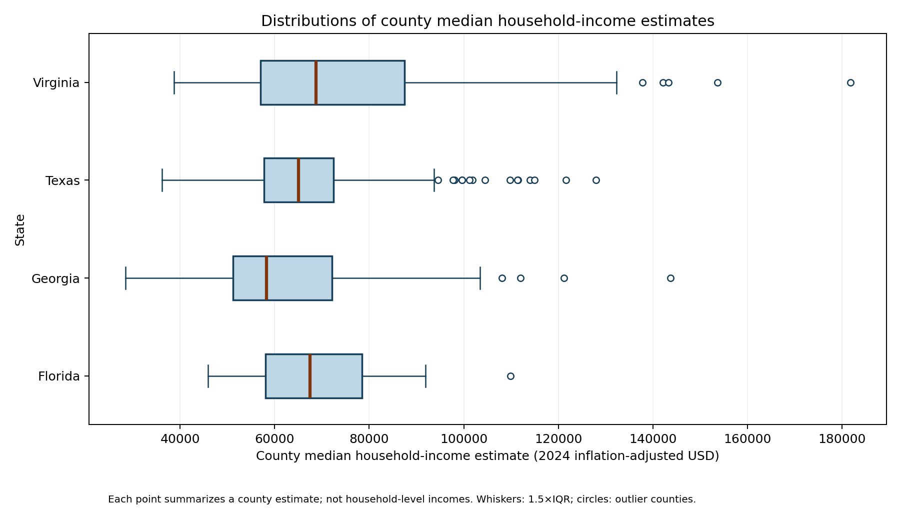

Also known as: box-and-whisker plot.
Apply the Census Bureau Statistical Quality Standards, revised September 29, 2026, within their stated scope. The chart-selection advice and implementation checks on this page explain practical design choices; they do not create additional agency mandates. Treat Essential items as the core design conditions for this chart, and confirm formal applicability through the program’s review process.
Coordinate this page with Titles and Subtitles, Legends, Sources, and Visualizing Uncertainty. Keep detailed component guidance in those shared pages rather than duplicating it here.
A boxplot summarizes a numeric distribution using the first quartile (Q1), median, third quartile (Q3), whiskers, and optionally outlying observations. It supports comparisons of center, spread, skewness, and potential outliers among groups. It does not show the full distribution or a density estimate.
| Question | Preferred display | Reason |
|---|---|---|
| Compare group medians and spreads | Boxplot | Compact summary across groups |
| Identify distribution peaks | Histogram or density plot | Boxplots conceal modes |
| See each observation | Dot/strip plot | Preserves individual values |
| Compare changing values over time | Line graph | Reveals time ordering |
B19013_001E median household
income and published 90% MOE B19013_001M; dollar values are
in 2024 inflation-adjusted dollars.A minimum-to-maximum boxplot and a 1.5 × IQR boxplot are different valid summaries. Name the convention for every example. The box spans Q1 to Q3 and the median is drawn at its actual value; the median need not be geometrically centered inside the box. Draw whiskers along the value axis in either a horizontal or vertical layout. For the original minimum-to-maximum convention, label the extremes; for the reproducible IQR convention, distinguish whiskers from separately plotted outliers.
Compare groups with equivalent measures, universes, units, and reference periods. A bar chart can compare a few named values, but it does not replace a boxplot’s distribution summary merely because the numerical differences are large.
Use these comparisons to connect each design choice with its effect on interpretation.
| Problematic approach | Why it matters | Preferred approach |
|---|---|---|
| Whiskers are unlabeled or described as a confidence interval | Readers cannot distinguish range, IQR-based limits, and sampling uncertainty | Name the quartile method and whisker rule in the figure note |
| Extreme county estimates are automatically deleted | The distribution is altered without a substantive reason | Display outlying points; investigate them and document any justified exclusions |
| Median of county medians is called state median household income | A summary across counties is confused with the source’s household-level state statistic | Label the county-level summary explicitly; retrieve the state statistic separately if needed |
Test the chart at its intended display size and with enlarged text. Follow the reading sequence from title to explanation, figure, table, and source. Check that labels and meaningful marks remain distinguishable without color and that any controls can be operated by keyboard with visible focus. Read the explanation and table with a screen reader to confirm that they convey the same measures, units, missing-data conditions, and important relationships as the chart.
Use automated and manual accessibility testing together. A downloadable CSV supplies values but does not replace the chart’s explanatory narrative; see USWDS visualization guidance. Record the page/version, tool or assistive technology, result, and corrective action. Apply the sponsor’s agreed accessibility baseline rather than treating a palette simulation as a conformance test.
The following examples are retained from the Census guidance. Their datasets, periods, universes and design lessons remain distinct. Some illustrate limitations or less-preferred choices; inclusion does not certify every design or its accessibility.
Example: Range of Median Household Income at the County-Level by Region: 2012.
This graph is a good example of the following: * The notes clearly define the whisker and box definitions of each box plot and because it was defined as minimum and maximum for the whiskers, no discussion of outliers and their omission is needed.
Interpretation note: The original uses minimum-to-maximum whiskers. The proposed ACS example uses the stated 1.5 × IQR rule with separate outliers. Both can be valid, but the definition must accompany the figure; neither whisker convention is automatically a confidence interval.
2020–2024 ACS county median household-income estimates. B19013: compare equally weighted county estimates by state using an explicit quartile and whisker convention.
What this adds: Adds computation checks and separates a distribution of county medians from household-level income distributions.
Run evidence: The supplied November 10, 2026 run generated this example. Saved-data arithmetic and chart layout were reviewed for this package; published-page accessibility testing remains outstanding.

Source and interpretation: U.S. Census Bureau, 2020–2024 ACS 5-Year Estimates, Detailed Table B19013, county median household-income estimates in 2024 dollars. Counties and county equivalents each receive equal weight. The supplied run completed November 10, 2026 (UTC).
The export includes 613 valid county or county-equivalent estimates with no excluded income estimates. Quartiles use linear interpolation (type 7); whiskers end at observed values within 1.5 × IQR fences. County MOEs are retained in the CSV and are not confidence limits for the plotted quartiles. Virginia includes independent cities as county equivalents.
Selected values (rounded for display; CSV retains exported precision):
| State | Counties/equivalents | Q1 ()|Median() | Q3 ($) | Outlier count | |
|---|---|---|---|---|---|
| Florida | 67 | 58,097 | 67,500 | 78,466.50 | 1 |
| Georgia | 159 | 51,131 | 58,239 | 72,111.50 | 4 |
| Texas | 254 | 57,740.25 | 65,034.50 | 72,417 | 15 |
| Virginia | 133 | 57,045 | 68,724 | 87,407 | 5 |
Read the data tables · Download boxplot_summary.csv · Download boxplot_county_data.csv
Implementation: Python source. The original illustrations above and the ACS output have separate asset paths and source statements.
Use the original illustrations to discuss design choices and their source-specific limitations. Use the ACS addition to demonstrate a documented data-to-chart workflow. Do not combine values across examples, imply that they use one dataset, or relabel a historical image as a new ACS output.
The following contract defines the intended behavior of the linked examples. Confirm the files, commands, dependencies, and generated results against the repository before publication.
Inputs: 2020–2024 ACS 5-Year B19013 county median household-income estimates and published county MOEs, grouped by state, with geographic identifiers and annotations.
Give each valid county equal weight. Retain source MOEs separately from the computed distribution summaries. Use type-7 linear-interpolation quartiles in both languages and 1.5 × IQR whiskers ending at observed values inside the fences. Include valid and excluded county counts for each state.
Use the supplied
Python implementation and the ACS example
runner. The runner maps this page to job boxplot. Its
dependencies are listed in requirements.txt.
Confirm supported input options in the implementation and its
accompanying README.
The executed notebook contains saved outputs from the supplied ACS run. The run status CSV records generated results. The notebook produces the ACS additions; it does not recreate the historical Census illustrations.
The analytical definitions and output checks on this page also specify the requirements for an R counterpart. A verified R implementation is not bundled in this combined package. Retain R execution and Python/R agreement as outstanding validation tasks; do not describe them as completed.
A personal Census API key is required for data queries under the current
Census API guidance. Read CENSUS_API_KEY from the
analyst’s environment. Do not include keys in source control, saved
notebooks, request logs, error messages, or execution manifests; redact
the key query parameter wherever a request URL is recorded.
No shared developer credential or private file path should be
required.
For each run, save the validated data, chart PNG/SVG, a semantic HTML table, descriptive-text draft, and a nonsecret manifest in the selected output folder. Include source table/variables, full reference period, geography, units, transformations, exclusions, dependency versions, and retrieval time. Pin or record versions actually tested. For identical inputs, R and Python should reproduce the same analytical values within an explicitly documented tolerance; visual styling need not be pixel-identical.
When changing years or geographies, recheck product coverage, definitions, annotations, and comparability. A successful run does not establish statistical significance or accessibility conformance.
| Check | Expected evidence |
|---|---|
| Summary ordering | Lower whisker ≤ Q1 ≤ median ≤ Q3 ≤ upper whisker for each nonempty group |
| Whiskers and points | Whiskers are actual included values within the IQR fences, not the fences themselves; every point beyond the fences is accounted for |
| Language agreement | Q1, median, Q3, whiskers, and outlier membership match across Python/R within the stated precision; county MOEs are not quartile confidence intervals |
Source-statement pattern for this example: U.S. Census Bureau, American Community Survey, 2020–2024 ACS 5-Year Estimates, Detailed Table B19013. Boxplots summarize equally weighted county median household-income estimates in 2024 dollars; they do not show household income distributions. Add the specific source or reproducible request link and actual retrieval date; omit the API key. Identify derived calculations separately from published estimates.
| Error | Better practice |
|---|---|
| Calling every extreme point an error | Explain the outlier rule; investigate context before exclusion |
| Assuming whiskers are minimum/maximum | State the exact convention |
| Interpreting county income medians as household income data | Identify the county as the observation unit |
| Ignoring ACS sampling error | Retain county MOEs; do not treat a boxplot as an uncertainty interval |
| Changing scales across panels | Use a consistent axis for comparison |
Related: Histogram, Scatter Plot, Visualizing Uncertainty.
Sources: Census Bureau ACS 5-Year dataset; ACS B19013 API variable.
The original Census page and its example assets are preserved in this package; see the review record for the exact baseline and changes.
Use the September 29, 2026 consolidated Census Statistical Quality Standards, especially E1-6 (replication documentation), E2-2.3 (visualization requirements), and E3-2.4 (visualization review). Retain review findings and corrections separately from the design checklist.